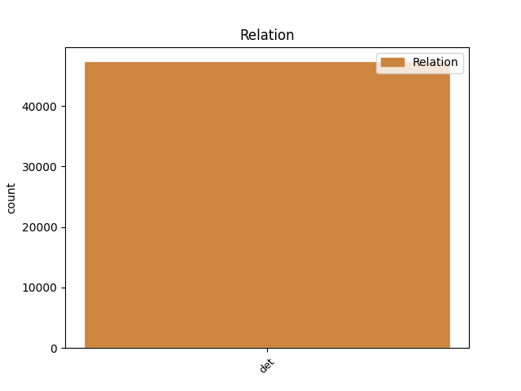
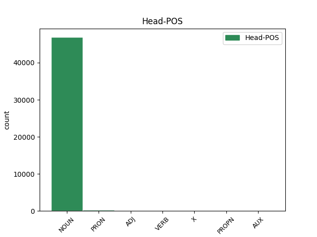
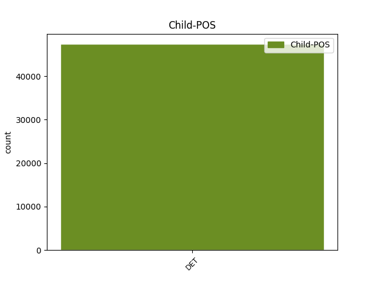

Distribution of features within this leaf



Agreement Rules sorted by frequency.
- When the dependent token is the determiner(det) of the head token,
1 Selon _ _ _ _ 0 _ _ _
2 une _ _ _ _ 0 _ _ _
3 première _ _ _ _ 0 _ _ _
4 hypothèse _ _ _ _ 0 _ _ _
5 , _ _ _ _ 0 _ _ _
6 l' _ _ _ _ 0 _ _ _
7 origine _ _ _ _ 0 _ _ _
8 est _ _ _ _ 0 _ _ _
9 issue _ _ _ _ 0 _ _ _
10 de _ _ _ _ 0 _ _ _
11 l' _ _ _ _ 0 _ _ _
12 appelatif _ _ _ _ 0 _ _ _
13 gaulois _ _ _ _ 0 _ _ _
14 alpe _ _ _ _ 0 _ _ _
15 , _ _ _ _ 0 _ _ _
16 lui-même _ _ _ _ 0 _ _ _
17 issu _ _ _ _ 0 _ _ _
18 d' _ _ _ _ 0 _ _ _
19 une _ _ _ _ 0 _ _ _
20 racine _ _ _ _ 0 _ _ _
21 celtique _ _ _ _ 0 _ _ _
22 ou _ _ _ _ 0 _ _ _
23 pré-celtique _ _ _ _ 0 _ _ _
24 alp _ _ _ _ 0 _ _ _
25 qui _ _ _ _ 0 _ _ _
26 viendrait _ _ _ _ 0 _ _ _
27 dalbos _ _ _ _ 0 _ _ _
28 signifiant _ _ _ _ 0 _ _ _
29 selon _ _ _ _ 0 _ _ _
30 Delamarre _ _ _ _ 0 _ _ _
31 « _ _ _ _ 0 _ _ _
32 le _ _ _ _ 0 _ _ _
33 monde _ _ _ _ 0 _ _ _
34 lumineux _ _ _ _ 0 _ _ _
35 , _ _ _ _ 0 _ _ _
36 le le DET _ Definite=Def|Gender=Masc|Number=Sing|PronType=Art 37 det _ _
37 monde monde NOUN _ Gender=Masc|Number=Sing 0 _ _ _
38 d' _ _ _ _ 0 _ _ _
39 en _ _ _ _ 0 _ _ _
40 haut _ _ _ _ 0 _ _ _
41 » _ _ _ _ 0 _ _ _
42 . _ _ _ _ 0 _ _ _
Disagree Examples:
1 Il _ _ _ _ 0 _ _ _
2 intègre _ _ _ _ 0 _ _ _
3 le le DET _ Definite=Def|Gender=Masc|Number=Sing|PronType=Art 5 det _ _
4 sports _ _ _ _ 0 _ _ _
5 études étude NOUN _ Gender=Fem|Number=Plur 0 _ _ _
6 de _ _ _ _ 0 _ _ _
7 Baraqueville _ _ _ _ 0 _ _ _
8 et _ _ _ _ 0 _ _ _
9 remporte _ _ _ _ 0 _ _ _
10 avec _ _ _ _ 0 _ _ _
11 ses _ _ _ _ 0 _ _ _
12 coéquipiers _ _ _ _ 0 _ _ _
13 de _ _ _ _ 0 _ _ _
14 la _ _ _ _ 0 _ _ _
15 ligue _ _ _ _ 0 _ _ _
16 de _ _ _ _ 0 _ _ _
17 le _ _ _ _ 0 _ _ _
18 Midi-Pyrénées _ _ _ _ 0 _ _ _
19 , _ _ _ _ 0 _ _ _
20 dont _ _ _ _ 0 _ _ _
21 Fabien _ _ _ _ 0 _ _ _
22 Barthez _ _ _ _ 0 _ _ _
23 , _ _ _ _ 0 _ _ _
24 la _ _ _ _ 0 _ _ _
25 coupe _ _ _ _ 0 _ _ _
26 nationale _ _ _ _ 0 _ _ _
27 cadets _ _ _ _ 0 _ _ _
28 en _ _ _ _ 0 _ _ _
29 1986 _ _ _ _ 0 _ _ _
30 . _ _ _ _ 0 _ _ _
1 Le _ _ _ _ 0 _ _ _
2 label _ _ _ _ 0 _ _ _
3 a _ _ _ _ 0 _ _ _
4 sorti _ _ _ _ 0 _ _ _
5 plusieurs _ _ _ _ 0 _ _ _
6 albums _ _ _ _ 0 _ _ _
7 de _ _ _ _ 0 _ _ _
8 groupe _ _ _ _ 0 _ _ _
9 influent _ _ _ _ 0 _ _ _
10 , _ _ _ _ 0 _ _ _
11 sinon _ _ _ _ 0 _ _ _
12 des un DET _ Definite=Ind|Gender=Masc|Number=Plur|PronType=Art 13 det _ _
13 groupe groupe NOUN _ Gender=Masc|Number=Sing|Typo=Yes 0 _ _ _
14 " _ _ _ _ 0 _ _ _
15 genre-defining _ _ _ _ 0 _ _ _
16 " _ _ _ _ 0 _ _ _
17 , _ _ _ _ 0 _ _ _
18 incluent _ _ _ _ 0 _ _ _
19 7 _ _ _ _ 0 _ _ _
20 Seconds _ _ _ _ 0 _ _ _
21 et _ _ _ _ 0 _ _ _
22 SNFU _ _ _ _ 0 _ _ _
23 dans _ _ _ _ 0 _ _ _
24 les _ _ _ _ 0 _ _ _
25 années _ _ _ _ 0 _ _ _
26 1980 _ _ _ _ 0 _ _ _
27 et _ _ _ _ 0 _ _ _
28 Leatherface _ _ _ _ 0 _ _ _
29 , _ _ _ _ 0 _ _ _
30 The _ _ _ _ 0 _ _ _
31 Unseen _ _ _ _ 0 _ _ _
32 , _ _ _ _ 0 _ _ _
33 Throw _ _ _ _ 0 _ _ _
34 Rag _ _ _ _ 0 _ _ _
35 , _ _ _ _ 0 _ _ _
36 Pistol _ _ _ _ 0 _ _ _
37 Grip _ _ _ _ 0 _ _ _
38 , _ _ _ _ 0 _ _ _
39 Souls _ _ _ _ 0 _ _ _
40 , _ _ _ _ 0 _ _ _
41 Youth _ _ _ _ 0 _ _ _
42 Brigade _ _ _ _ 0 _ _ _
43 / _ _ _ _ 0 _ _ _
44 Swinging _ _ _ _ 0 _ _ _
45 Utters _ _ _ _ 0 _ _ _
46 et _ _ _ _ 0 _ _ _
47 Alkaline _ _ _ _ 0 _ _ _
48 Trio _ _ _ _ 0 _ _ _
49 / _ _ _ _ 0 _ _ _
50 One _ _ _ _ 0 _ _ _
51 Man _ _ _ _ 0 _ _ _
52 Army _ _ _ _ 0 _ _ _
53 et _ _ _ _ 0 _ _ _
54 d' _ _ _ _ 0 _ _ _
55 autres _ _ _ _ 0 _ _ _
56 groupe _ _ _ _ 0 _ _ _
57 de _ _ _ _ 0 _ _ _
58 nos _ _ _ _ 0 _ _ _
59 jours _ _ _ _ 0 _ _ _
60 . _ _ _ _ 0 _ _ _
1 Chaque _ _ _ _ 0 _ _ _
2 arrondissement _ _ _ _ 0 _ _ _
3 forme _ _ _ _ 0 _ _ _
4 un _ _ _ _ 0 _ _ _
5 secteur _ _ _ _ 0 _ _ _
6 municipal _ _ _ _ 0 _ _ _
7 , _ _ _ _ 0 _ _ _
8 à _ _ _ _ 0 _ _ _
9 l' _ _ _ _ 0 _ _ _
10 exception _ _ _ _ 0 _ _ _
11 de _ _ _ _ 0 _ _ _
12 les le DET _ Definite=Def|Gender=Masc|Number=Plur|PronType=Art 16 det _ _
13 1er _ _ _ _ 0 _ _ _
14 et _ _ _ _ 0 _ _ _
15 4e _ _ _ _ 0 _ _ _
16 arrondissement arrondissement NOUN _ Gender=Masc|Number=Sing 0 _ _ _
17 , _ _ _ _ 0 _ _ _
18 d' _ _ _ _ 0 _ _ _
19 une _ _ _ _ 0 _ _ _
20 part _ _ _ _ 0 _ _ _
21 , _ _ _ _ 0 _ _ _
22 et _ _ _ _ 0 _ _ _
23 de _ _ _ _ 0 _ _ _
24 les _ _ _ _ 0 _ _ _
25 2e _ _ _ _ 0 _ _ _
26 et _ _ _ _ 0 _ _ _
27 3e _ _ _ _ 0 _ _ _
28 arrondissements _ _ _ _ 0 _ _ _
29 , _ _ _ _ 0 _ _ _
30 d' _ _ _ _ 0 _ _ _
31 autre _ _ _ _ 0 _ _ _
32 part _ _ _ _ 0 _ _ _
33 , _ _ _ _ 0 _ _ _
34 qui _ _ _ _ 0 _ _ _
35 forment _ _ _ _ 0 _ _ _
36 respectivement _ _ _ _ 0 _ _ _
37 les _ _ _ _ 0 _ _ _
38 1er _ _ _ _ 0 _ _ _
39 et _ _ _ _ 0 _ _ _
40 2e _ _ _ _ 0 _ _ _
41 secteurs _ _ _ _ 0 _ _ _
42 . _ _ _ _ 0 _ _ _
1 Graham _ _ _ _ 0 _ _ _
2 devra _ _ _ _ 0 _ _ _
3 y _ _ _ _ 0 _ _ _
4 prélever _ _ _ _ 0 _ _ _
5 d' _ _ _ _ 0 _ _ _
6 autorité _ _ _ _ 0 _ _ _
7 48 _ _ _ _ 0 _ _ _
8 de _ _ _ _ 0 _ _ _
9 ces ce DET _ Gender=Masc|Number=Plur|PronType=Dem 11 det _ _
10 nouveaux _ _ _ _ 0 _ _ _
11 fusil fusil NOUN _ Gender=Masc|Number=Sing 0 _ _ _
12 Henry _ _ _ _ 0 _ _ _
13 à _ _ _ _ 0 _ _ _
14 répétition _ _ _ _ 0 _ _ _
15 , _ _ _ _ 0 _ _ _
16 avec _ _ _ _ 0 _ _ _
17 5 000 _ _ _ _ 0 _ _ _
18 cartouches _ _ _ _ 0 _ _ _
19 , _ _ _ _ 0 _ _ _
20 pour _ _ _ _ 0 _ _ _
21 équiper _ _ _ _ 0 _ _ _
22 la _ _ _ _ 0 _ _ _
23 colonne _ _ _ _ 0 _ _ _
24 . _ _ _ _ 0 _ _ _
1 Les _ _ _ _ 0 _ _ _
2 premiers _ _ _ _ 0 _ _ _
3 missionnaires _ _ _ _ 0 _ _ _
4 , _ _ _ _ 0 _ _ _
5 protestants _ _ _ _ 0 _ _ _
6 et _ _ _ _ 0 _ _ _
7 catholiques _ _ _ _ 0 _ _ _
8 , _ _ _ _ 0 _ _ _
9 arrivés _ _ _ _ 0 _ _ _
10 à _ _ _ _ 0 _ _ _
11 le _ _ _ _ 0 _ _ _
12 tournant _ _ _ _ 0 _ _ _
13 de _ _ _ _ 0 _ _ _
14 le _ _ _ _ 0 _ _ _
15 XXe _ _ _ _ 0 _ _ _
16 siècle _ _ _ _ 0 _ _ _
17 convertissent _ _ _ _ 0 _ _ _
18 l' _ _ _ _ 0 _ _ _
19 ensemble _ _ _ _ 0 _ _ _
20 de _ _ _ _ 0 _ _ _
21 les _ _ _ _ 0 _ _ _
22 indigènes _ _ _ _ 0 _ _ _
23 et _ _ _ _ 0 _ _ _
24 poussent _ _ _ _ 0 _ _ _
25 à _ _ _ _ 0 _ _ _
26 l' _ _ _ _ 0 _ _ _
27 abandon _ _ _ _ 0 _ _ _
28 de _ _ _ _ 0 _ _ _
29 les _ _ _ _ 0 _ _ _
30 cultes _ _ _ _ 0 _ _ _
31 traditionnels _ _ _ _ 0 _ _ _
32 ainsi _ _ _ _ 0 _ _ _
33 que _ _ _ _ 0 _ _ _
34 de _ _ _ _ 0 _ _ _
35 certaines certain DET _ Gender=Fem|Number=Plur 36 det _ _
36 pratique pratique NOUN _ Gender=Fem|Number=Sing 0 _ _ _
37 sociales _ _ _ _ 0 _ _ _
38 . _ _ _ _ 0 _ _ _